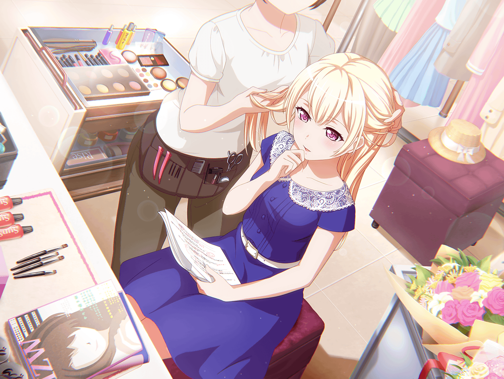

楽屋
千聖
ライブ終了、お疲れ様
麻弥
お疲れさまです！
イヴ
押忍！ お疲れ様です！！
千聖
あれ？
日菜ちゃんと彩ちゃんは？
麻弥
彩さんは部屋の片づけが、
日菜さんは雑貨屋に行くって言って、
早めに帰りましたよ
イヴ
チサトさんはまだ帰らなくてもいいんですか？
千聖
私は明日がオフだから、
ゆっくり休憩してから帰るわ
麻弥
ジブンは……特に予定もないんで、
千聖さんと同じで休憩でもしていこうかと
イヴ
私はふたりと一緒にお話したいです！
三人でライブの余韻に浸りましょう！
麻弥
お菓子でもあればいいんですけどね
千聖
ふふ、お菓子を肴に余韻に浸るつもり？
麻弥
いやいや、肴って、おじさんじゃないんですから～
イヴ
お魚がお菓子ですか？
んー、じゃあお茶よりもお米が欲しくなりますね〜
麻弥
イヴさん、その『サカナ』じゃないっす
イヴ
んー？ サカナがサカナじゃないんですか？
難しいです〜……
麻弥
えっと、ちょっと違うです……
麻弥
あ、そう言えば、千聖さん
千聖
どうしたの麻弥ちゃん？
麻弥
千聖さんは子役として活躍されてましたよね
千聖
そうね、小さい頃からやってたわ。
それがどうかしたの？
麻弥
いやー、どうして子役になったのかなーって思いまして。
子役を志すきっかけか何かあったんですか？
イヴ
あ！ それ私も知りたいです！
役者であるチサトさんの原点！
千聖
……子役になったきっかけ
千聖
ふふ。どうだったかしら。
そもそも、自分の意思でこの世界に入ったかどうかも、
今となっては思い出せないわ
イヴ
覚えてませんか……
麻弥
幼い頃の話ですもんね。
そりゃあそうですよねー……
麻弥
あれ？
でもこの間、ジブンがドラムを始めたきっかけを語ったとき……
麻弥
千聖さん、たそがれた様子で天井を見上げてましたよね？
あの時、そのきっかけを思いだしてたんじゃないんですか？
千聖
よくそんなこと覚えてるわね……
麻弥
フヘヘ……すみません……
千聖
そうね。あの時はたぶん、麻弥ちゃんの言う通り、
自分の原点がなんだったのかを考えていたんだと思う
千聖
子役は物心つく前からやっていたし、
第一、そんなこと考えたこともなかったから……
千聖
私の原点って何なんだろうってね
イヴ
原点がわからないなら、
パスパレをそうすればいいんです！
イヴ
ないなら作ればいい！
いま一番身近なものを自分の原点にすればいいんです！
イヴ
いつか大人になったとき、
パスパレが原点だと言えるようにしちゃえばいいんです！
麻弥
なるほど……。
ちょっと無理矢理な理屈ですけど、一理ありますね
麻弥
確かにイヴさんの言うようにジブン達パスパレが
チサトさんの原点になったら……
麻弥
それは、とても素敵なことだと思います
千聖
ふふ、あなた達も彩ちゃんと同じことを言うのね
千聖
Pastel＊Palettesが私の原点、か……
イヴ
はい！
私やマヤさん、ヒナさんやアヤさんがいるパスパレが！
千聖
……ふふっ、そうね
千聖
それも……いいかもしれないわね
麻弥
それじゃあ、千聖さんの原点はパスパレということで！
千聖
ええ。いつか誰かに私の原点が何か聞かれたときは、
パスパレがそうだと答えることにするわ
千聖
役者としてはともかく、
アイドル・白鷺千聖の原点は間違いなくパスパレよ
麻弥
さすが千聖さん！
イヴ
さすがはパスパレの千聖御前です！
千聖
そんなこと、言われたことないんだけど……